Operating Documentation
Direction 5181178-800, Rev# 16
BrightSpeed Select Service Methods Gen
Module Version 2.0, Version Date 7/23/12
Operating Documentation |
| Last Revised: | Jan 30, 2012 |
The purpose of Pancake DAS is to accumulate snapshots (called views) of the X-ray image of the target, and move those snapshots through a high-speed link to the Host for processing. Each view is started by a trigger, which can be generated externally or internally (by a timer on the DCB).
The purpose of the DCB firmware is to set up and control the hardware needed to acquire views and transmit them to the Host.
The hardware consists of the FPGA components on the DCB, the IFBs and their associated ADBs (A/D converter board). The DCB sends requests to the IFBs/ADB to control them, or to query them for their status and/or settings.
It should be noted that the view data is not directly managed by the DCB firmware. The DCB FPGA is responsible for view acquisition from the IFBs/ADB, and transmission to the host. The DCB’s firmware provides control information for the DCB FPGA to properly manage the data flow through the DAS and onto the Host.
The DCB itself is controlled via requests from the Host. Among the most important of the requests is the scan Rx, which, as the name implies, is the prescription for the scan. It provides the parameters needed to control the scan, including such information as the trigger frequency, the number of views to acquire, the starting view angle, and so on. Beyond the scan Rx, many other communications also come from the host, including status queries.
Pancake DAS and Detector is comprised of the following components:
X-ray detector and DAS interface (Section 2)
The primary function of the Detector is to convert X-ray photons into electrical current, which is sent to the Data Acquisition System (DAS) for signal amplification and analog to digital conversion, before being sent to the Recon Unit for image reconstruction.
A/D converter board (ADB board) (Section 3)
The ADB board process the low current signals from 4 detector modules outputs (including A and B side of each module) and converts these signals into digital signals. There are 15 ADB boards located on two separate backplane boards, low channel backplane and high channel backplane.
Digital Interface Boards (DIFB) (Section 4)
The DIFB's are the Digital interface boards that take the ADB board digital output signals and send them to the DCB. There are 8 DIFB's for the Pancake DAS 16.
DAS Control Board (DCB) (Section 5)
The DCB is the main control board for the DAS. It packages all the interface card data into a single high-speed serial data stream.
Backplane (Section 6)
The DAS Backplane is comprised of 2 boards that contain passive components only. The backplanes route a calibration reference level signal from the DCB and power supply voltages to the FRDM's as well as transmitting digital signals.
Air Plenum (Section 7)
The Air plenum is comprised of 3 fans and filter assembly. Air plenum assembly provides proper heat dissipation for DAS components. The DAS heat dissipation is separate from the detector heat control. The detector temperature is controlled by DHCB board. Refer to Detector Heater Control Board (DHCB) theory for details.
48V Power supply (Section 8)
The 48V power supply is a single power supply on the rotating assembly that powers most all of the components. This supply is not specific to the DAS. All voltages used by the DAS and Detector are generated via on board regulators on the DCB and DIFB's.
The Detector Heater Control (DHCB) board theory can be found in the Gantry Thermal Theory document.
Illustration 1: PDAS Block Diagram
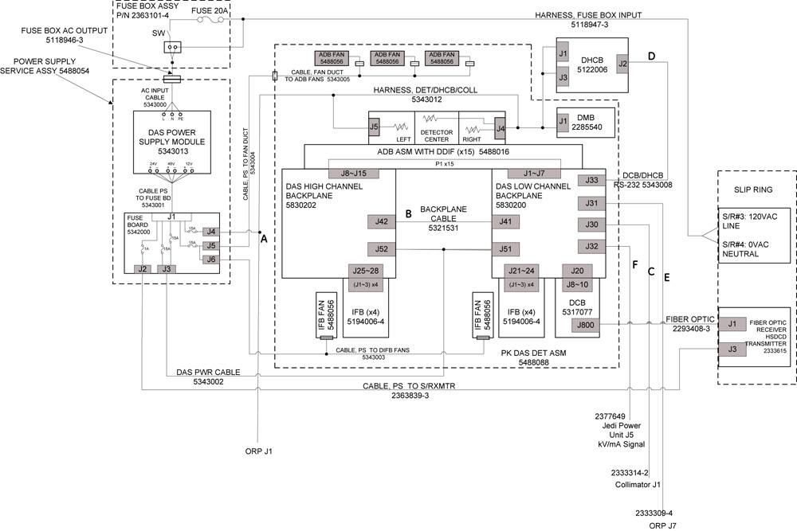
Illustration 2: Data flow in PDAS
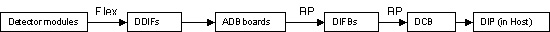
The smallest element of the X-ray detector matrix is a detector pixel. The detector pixel has a current output that is proportional to the incident X-ray flux.
Some applications will include the connection of multiple pixels in parallel to a single DAS preamplifier channel. The connection means is a FET switch array, that is external to the DAS and converter card and is in the detector assembly or module. The FET array will connect pixels in the ”Z” direction, which is the direction normally parallel to the longitudinal axis of the patient. Up to eight pixels may be connected in this manner. The output of such interconnected pixels shall hereafter be referred to as a detector cell. If an application includes pixels, which are not connected to an output cell or preamplifier input, such pixels will be connected to electrical ground by the FET array, or in part of the DAS external to the Converter Board. The disconnected pixels will present a FET off impedance to the DAS.
For most DAS channels, the detector cell aperture is one cell column or 1mm long in the azimuthal direction. However, some cell outputs will be digitally combined by DCB in either pairs or triplets in the azimuthal direction to form 2mm and 3mm cells. Detector cell so connected will be termed “ganged” cells.
The Watson 16 detector has total 57 detector modules, 912 detector channels which are used to connected with Pancake DAS. Pancake DAS data channel number is 768ch, which is the same as GDAS16. This is achieved through digital ganging the 912 detector channels to 768 DAS channels (The ganging is done after A/D conversion).
The ganging format is shown in below diagram:
Illustration 3: Detector_DAS_Ganging
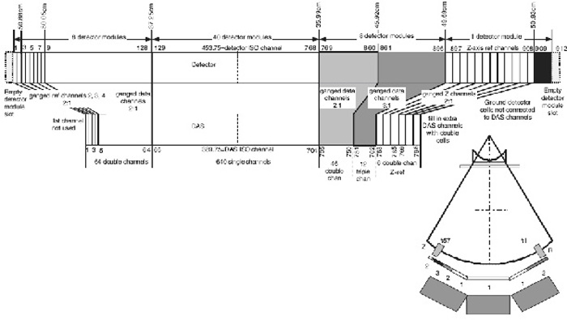
Detector channel 1-128 corresponding to DAS channel 1-64 with ganging ration 2:1.
Dtector channel 129-768 corresponding to DAS channel 65-704 without ganging.
Detector channel 769-860 corresponding to DAS channel 705-750 with ganging ration 2:1.
Detector channel 861-896 corresponding to DAS channel 751-762 with ganging ration 3:1.
Detector channel 897-908 corresponding to DAS channel 763-768 with ganging ration 2:1.
Detector channel 909-912 are grounding.
Watson 16 detector and Pancake DAS use the same DDIF connectors as GDAS to transfer signal and power, which is shown in Illustration 4
Illustration 4: DDIF Assembly

The ADB assembly is designed for Pancake DAS 16 slice system. The main functions of the ADB are:
Provide DDIF (DAS Detector Interface) connection, which is same as current 16-slice system. Each ADB holds 4A/4B detector modules (each detector module has 16 detector channels).
Employ 16pcs GDAS ASIC rev 4 (CSP package) processing analog low current from detector cells outputs and converts them into digital.
FET lines will be provided by DCB. To design common ADB, two groups of FET lines goes through ADB to Watson detector. If the ADB is on the low channel side of the DAS, then FET lines include Low-Z, reference control. If the ADB is on the high side of the DAS, then FET lines include High-Z, besides active data modules.
Receive configuration instructions and scan commands data synchronized with clock from DIFB board. ADB converted DAS data will be shifted out and transmitted to the DIFB.
The two output serial data streams to the DIFB are same as data format of VCT HALO ADM. One is even group of 8pcs ASIC and the other is odd group of 8pcs ASIC channels arranged respectively. Each DIFB can receive DAS data from 4 serial data streams from 2 ADB board, total 32pcs ASIC data.
The two output serial data streams to the DIFB are same as data format of VCT HALO ADM. One is even group of 8pcs ASIC and the other is odd group of 8pcs ASIC channels arranged respectively. Each DIFB can receive DAS data from 4 serial data streams from 2 ADB board, total 32pcs ASIC data.
ADB will do thermal tracking and alfa-calibration controlled by DIFB. Internal and external reference current will be used.
In order to get better thermal performance, heat sink over 16 ASICs should be conduct heat correctly by package thermal design.
Provide diagnostic LED for debugging the status of the board.
The ADB are designed common that they are interchangeable between each other.
The ADB have two on board temperature sensors that monitor the board temperature to ensure that the PDAS ADB are operating in its proper temperature range. The temperature sensor temperature will be read via the I2C interface. Temperature will be sampled during each view and send to DCB.
The ADB are designed to use the following power supply voltages. Total maximum power requirement should be under 25.6W.
Table 1: ADB Power Supply
| Characteristics | +2.5V analog | -2.5V analog | +1.2V digital | +2.5V digital | +3.3V digital | |
| Supply current (estimated typical value) | 2.4A | 3.6A | 0.6A | 2.0A | 0.2A | |
| Power | (Typical) | 6.0W | 9.0W | 0.72W | 5.0W | 0.66W |
| (Maximum, *120%) | 7.2W | 10.8W | 0.86W | 6.0W | 0.79W | |
| Voltage tolerance | ±5% | ±5% | ±5% | ±5% | ±5% | |
| Maximum peak-to-peak noise and ripple | 2.5mV | 2.5mV | 2.5mV | 2.5mV | 2.5mV | |
| Maximum load regulation, 50% load change | ±0.05% | ±0.05% | ±0.05% | ±0.05% | ±0.05% | |
| Output transient response, maximum recovery to within 1% of initial set point with 50% load change | 50usec | 50usec | 50usec | 50usec | 50usec | |
| Maximum temperature coefficient | 0.03% | 0.03% | 0.03% | 0.03% | 0.03% | |
| Absolute Maximum Voltage Rating | +3VDC | -3VDC | +2.4VDC | +3VDC | +4.6VDC |
The -2.5V analog should be up before +2.5V analog, +2.5V digital. This will be controlled by DIFB output. The maximum required elapsed time from power-on to full to specify ADB performance should be less than one hour. Time to meet full specified ADB performance shall be computed on the basis of two minutes warm-up per minute since power was last on or one hour, whichever is less. However, under no conditions where the power has been temporarily turned off, shall the required warm-up to meet full performance specification be less than 20 seconds.
Illustration 5: ADB LED's and Test Points Layout
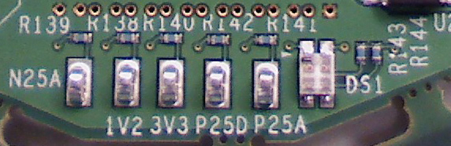
Illustration 6: ADB Block Diagram
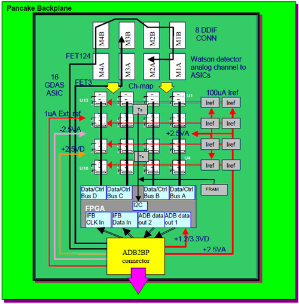
The ADB provides some test points on Power and Ground.
Table 2: ADB Test Point
| TP | Description | Voltage |
| 1V2 | FPGA core power supply | +1.2VDC |
| 3V3 | Sensor & EEPROM power supply | +3.3VDC |
| N25A | Negative 2.5V mix power supply | -2.5VDC |
| P25D | Positive 2.5V digital power supply | +2.5VDC |
| P25A | Positive 2.5V analog power supply | +2.5VDC |
A dual color (orange + green) LED provided on ADB to indicate the following information.
Table 3: ADB LED's
| DS1 | Description | Color |
| Mode 1 | Normal status with heart beat 1Hz. | Green 1Hz |
| Mode 2 | Doing scan flash at 25Hz | Orange 25Hz |
| Mode 3 | Did NOT get command from IFB | Yellow (Green+Orange always) |
| Mode 4 | ADB FRAM data corrupt (no serial #) | Orange (always) |
The DAS interface board that is abbreviated as DIFB, which acts as an interface bridge between the ADB board and the DAS control board (DCB). The DIFB processes multiple low speed data streams from the ADB boards and then sends high-speed data to the DCB in a serial stream.
The DIFB performs the following functions:
Voltage Regulation
Power Supply Sensing
Voltage Monitoring
CAN Interface to DCB
Data Formatting (FFP)
Serial Interface with the ADB boards.
ASIC Control
Point-To-Point Data Transmission to DCB
Offset Compensation
Linearization
Temperature Sensing
Diagnostics
The 16-slice Pancake DAS system architecture has 8 DIFBs each of which communicates with two ADBs. The only exception is the first DIFB (#1), which is only connected to ADB #1. The DIFBs are numbered by odd numbers only (1,3,5,7,9,11,13,15) since they are in the odd numbered slots of the DIFB chassis and need to line up to the backplane connector.
One DIFB communicates with two ADBs. The DIFB has separate transmitting and receiving lines for each ADB. The data lines are Low Voltage Differential Signals (LVDS).
It is a source synchronous design. Both transmitting and receiving data are transmitted with their clocks. The clocks are LVDS signals.
There is a separate reset signal from the DIFB to the ADB boards. The reset signal will reset the DAS ASICs and FPGA. The reset signal is derived from the DCB reset signal.
The DIFB supplies power to the ADB boards.
A signal is also used to specify if the ADB boards are present or not. The signal is an active low signal.
Only odd numbered DIFB's can configure the A/D board FPGA. This was necessary to be completely compatible with the VDAS32 architecture and HDAS64 architecture, both of which only have odd numbered DIFB boards.
Channel data read is a kind of the sequential read operation. The DIFB reads 4 serial data buses at the same time with a burst mode.
The interface between the DIFB and DCB is a point-to-point connection. A serial data output signal is a pair of low voltage differential signals. The trigger signal from the DCB initiates a view collection. During the initialization, the DIFB sends a series of the training patterns to the DCB. Once the DIFB is ready to send channel data to the DCB, the DIFB sends a 16-bit word header, the 1040 (32-slice) or 2080 (64-slice) data channels, and 16 auxiliary data for temperature signals and diagnostic data. Between the each view, the training pattern will be transmitted.
The CAN bus is used to communicate with the DCB and other IFBs through a CAN transceiver. There are only two serial lines to be connected on CAN bus: CAN_Hi and CAN_Lo (Differential , bi-directional signal pair). Communication is accomplished through a command/acknowledge protocol.
Each DIFB connected to the bus is software addressable by an unique address and each DIFB shall have its own unique address, known as its slave address. This address is determined by the DIFB backplane connection and the unique address is determined by the DIFB's location in the backplane.
The DIFB and ADBs have separate I2C data lines. A multiplex in the FPGA will select which I2C bus will be used.
Besides one I2C temperature sensor for itself, the DIFB also writes to and reads from two temperature sensors and one serial EEPROM for each ADB it is connected to. All sensors and EEPROMs are tied through a 2-wire serial interface (I2C bus).
The following test points and LED's are available on the DIFB. There are no adjustable power supplies in the DAS subsystem.
Table 4: LED's
| LED | Function | Condition: Blinking Green | Condition: OFF |
| DS1 | Error | Error code | No errors |
| DS2 | Trigger | Trigger occuring | No trigger activity |
| DS3 | CAN Activity | CAN activity present | No CAN traffic |
| DS4 | Not used | Not used | Not used |
Illustration 7: DIFB Board Layout
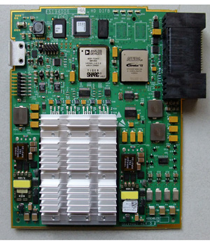
The DCB is the main control board for the Data Acquisition System (DAS). It packages all the interface card data into a single high-speed serial data stream, compatible with the receive function on the DAS Interface Processor (DIP).
From Interface Boards (DIFB):
Serial Data Streams
DIFB CAN Bus communication for status, faults, chassis temperature readings, and serial number information
Interface Board Fault Line
From On-Rotating Processor (ORP):
Input View Triggers
RCIB CAN Bus communication for scan prescription information and FLASH download
RCIB CAN Fault Signal
From Detector Heater Control board (DHCB):
- RS-232 Bus communication for status, faults, detector temperature readings, and detector identification information
From Generator:
- KV & MA analog signals
From Backplane:
- Power supply voltages
To Interface Boards:
Shift Clock
Trigger Signal
Converter CAN Bus communication for control information
Reset signal
External reference current
To On-Rotating Processor (ORP):
RCIB CAN Bus communication for DAS status, error, or scan complete information
RCIB CAN Fault Signal
To Detector Heater Control board (DHCB):
- RS-232 Bus communication for control information
To Detector:
- FET Control signals
To Slip-ring:
- High-speed serial data stream containing the view data with embedded FEC CRC.
The DCB will perform the following functions:
Interfaces with the On-Rotating Processor (ORP) for Rx reception and scan completion via CAN bus.
Sets up gain and offset trim and controls the interface boards, via the DIFB CAN interface.
Receives triggers and starts acquisitions with the interface cards.
· Performs serial-to-parallel conversion on data streams from the interface boards, does parity checking on the data, and formats the data for view transmission.
Adds Forward Error Correction (FEC) to the channel data and sends it across the slip-ring to the Scan Reconstruction Unit (SRU) via the high-speed serial data interface.
Detects jitter and time-outs in the view trigger signal.
Controls the operation of the Detector Heater Control board and monitors the subsystem for faults.
Monitors the power supply voltages to make sure they are within the software programmable limits.
Acquires the kV and mA values for each scan.
Controls the FET switch array in the detector to change the number and thickness of scan slices.
Monitors the DAS subsystem for various faults.
Stores & sums the z-axis reference channels, and performs calculations that control the collimator cam positioning. This is used to track the x-ray beam and keep it centered on the detector.
Two broadcast signals from the DCB are used to control the sequencing of data onto the data streams.
The trigger signal will be used to initiate the sampling and transmission of all the channels on the DIFB.
In response to an external or internal view trigger, DCB will generate a trigger pulse to all of the interface boards through the chassis backplane. Both external and internal view triggers have the same effect on the DCB.
The only mechanism to reset the converter boards will be to assert the reset signal. This active high, single-ended signal is set by the DCB and sent to all interface boards through the chassis backplane.
An active low signal is generated by an interface board to notify the DCB in the event of a fault condition. Any one or more interface boards can assert this signal at anytime. When the signal is asserted, the DCB will interrogate all interface boards via the Interface Board CAN bus to determine the cause and report an error condition when appropriate. The actual interrogation is done by firmware.
The DCB produces an external reference current, to the interface boards for diagnostic purposes.
The CAN bus used between the DCB and the converter boards is a bi-directional serial communications bus which requires only two serial lines. Communication is accomplished through a command/acknowledge protocol, rather than a register-access protocol.
The DCB will accept DAS channel data from the converter boards, per the following definition. The Interface Board processes digital channel data from the ASIC’s resident on the A/D boards. This data is combined with temperature measurements into a single point-to-point serial data stream to the DCB.
When the DIFB receives a trigger signal from the DCB, the DIFB starts to send its channel data. During the each view period, there will be some idle time, during which the DIFB will send alternating 1’s and 0’s (1 0 1 0 1 0 …) to maintain the lock.
The interface from the DCB to the console is designed to run at 2.488 Gbaud per link, where each link represents a physical channel on the slipring.
The DCB Host Interface will be used to control DAS operation and to communicate DAS status. The following sections describe the control interface. The DCB Host Interface makes use of Controller Area Network (CAN) technology. The DCB’s use of this technology including the physical interface conforms to all CAN specifications. All CAN signals are optically isolated between the DCB and the network.
The DCB receives the external view trigger input from the ORP via a twisted pair wire. This input signal is optically isolated from the DAS and causes the DAS to begin view data collection.
Measured scan kV and mA are read by the X-ray Generation Subsystem and fed back to the DAS so they can be inserted into the view data stream. The Generator Interface is implemented on a connector located on the backplane and signals are routed to the DCB via the backplane. These signals are differentially driven by X-ray Generation and received by the DCB.
The DCB generates a maximum of 18 signals to configure the detector FET MUX circuitry. Each of the following 3 groups of detector modules uses a maximum of 6 of these signals for their MUX configurations: Z-axis Upper (ZUFET), Data Channel Detector (DFET), and Z-axis Lower (ZLFET).
The DCB communicates with the Detector Heater Control board (DHCB) using an RS-232 serial communication interface. This interface provides the path for the DCB to setup and control DHCB operation, to monitor the DHCB subsystem for faults, and to obtain detector temperature readings for inclusion in the view data stream.
On power-up the DCB detects the presence of the DHCB in the system. If the presence of the DHCB is detected, the DCB will begin to communicate with the DHCB via the RS-232 interface through the CFC.
Below are the test points and LED's available on the DCB.
Table 5: DCB LED's
| LED | REF DESIGNATOR | FUNCTION |
|---|---|---|
| PWR | DS1 | Board has 3.3V digital power (On = power there, Off = no power). |
| RESET | DS2 | Board reset status ( Orange = board in reset, Green = Board not in reset, Off = circuit board malfunction). |
| FPGA LOAD | DS3 | Status of loading the FPGA (Orange = Loading, Green = Loaded, Not lit = loading failure) |
| B/A CODE | DS4 | Shows the status of the code loaded into the fpga (Orange = Boot code loaded, green = Application code loaded, Not lit = no code loaded). |
| HRTBEAT | DS5 | Processor running indicator (On/Off sequence shows processor is running). |
| GCAN_FLT | DS101 | RCIB can bus fault (On = fault, Off = no fault) |
| APP<0> | DS103 | Application code controlled: TRIG_SEEN |
| APP<1> | DS104 | Application code controlled: OFFSET |
| APP<2> | DS105 | Application code controlled: VIEWS |
| APP<3> | DS106 | Application code controlled: SHUTDOWN |
| FLT_SENS_EN | DS107 | Condition of the Fault Line (On: Fault line is Enabled OFF: Fault line is Disable) |
| FLT_YES | DS102 | Current Fault Handliing state (On: In Fault Condition OFF: Not in Fault Condition) |
| HCOM_ACT | DS108 | Status of connection to host (ON: Connected OFF: Not connected) |
| ERR_CODE | DS13 | Error code indicator (See table below) |
Below are the error code definitions (ERR_CODE LED):
Table 6: DCB LED DS13 Error Codes
| Digit 1 | Digit 2 | Error Code |
| 1 | 2 | Boot ram test failure |
| 1 | 3 | Boot ram copy of appl failed |
| 1 | 4 | Boot code CRC failure |
| 1 | 5 | Application CRC failure |
| 1 | 6 | Boot Application CRC failure |
| 1 | 7 | Application code size invalid |
| 1 | 8 | Boot Application code size invalid |
| 2 | 0 | Unable to create controller heartbeat task |
| 2 | 1 | Unable to initialize the serial interface |
| 2 | 2 | Unable to initialize command exectution and decode |
| 2 | 3 | An error was detected using the SCI driver |
| 2 | 4 | Unable to initialize software watchdog refresh task |
| 2 | 5 | Unable to initialize idle task |
| 2 | 6 | Controller Communication init failed |
| 2 | 7 | Unable to create NU+ System memory pool |
| 2 | 8 | Unable to initialize the programmable interrupt timer |
| 2 | 9 | Serial driver is unable to establish pend for read |
| 4 | 0 | Unable to make MCU initializations required by applications |
| 4 | 1 | Unable to make MCU initializations required by applications |
| 4 | 2 | Unable to silence interrupts |
| 4 | 3 | Application hardware fails selftest |
| 4 | 4 | Unable to create interrupt handlers |
| 4 | 5 | Unable to initialize hardware |
| 4 | 6 | Unable to create intertask communication objects |
| 4 | 7 | Unable to create application tasks |
| 4 | 8 | Unable to initialize due to Configuration Data |
| 4 | 9 | Unable to initialize due to Characterization Data |
| 5 | 0 | Unable to initialize the Error Logger |
| 5 | 1 | Unable to initialize the Tracer |
| 5 | 2 | Unable to create Error Logger Task |
| 5 | 3 | Unable to create Tracer Task |
| 5 | 4 | Unable to create Platform Task |
Illustration 8: DCB Board Layout
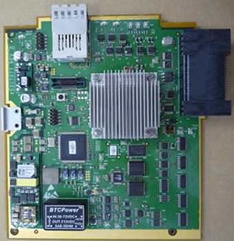
The DAS view data is shown as below:
Table 7: PDAS View Format
| 4 Row Formatting | 4 Row Lword Index | 8 Row Formatting | 8 Row Lword Index | 16 Row Formatting | 16 Row Lword Index |
| Header | 0-24 | Header | 0-24 | Header | 0-24 |
| 8A | 25-408 | ||||
| 7A | 409-792 | ||||
| 6A | 793-1176 | ||||
| 5A | 1177-1560 | ||||
| 4A | 25-408 | 4A | 1561-1944 | ||
| 3A | 409-792 | 3A | 1945-2328 | ||
| 2A | 25-408 | 2A | 793-1176 | 2A | 2329-2712 |
| 1A | 409-792 | 1A | 1177-1560 | 1A | 2713-3096 |
| 1B | 793-1176 | 1B | 1561-1944 | 1B | 3097-3480 |
| 2B | 1177-1560 | 2B | 1945-2328 | 2B | 3481-3864 |
| View Checksum | 1561 | 3B | 2329-2712 | 3B | 3865-4248 |
| 4B | 2713-3096 | 4B | 4249-4632 | ||
| View Checksum | 3097 | 5B | 4633-5016 | ||
| 6B | 5017-5400 | ||||
| 7B | 5401-5784 | ||||
| 8B | 5785-6168 | ||||
| View Checksum | 6169 |
Pancake DAS has the same view format as GDAS 16. But Pancake DAS has different view header from GDAS 16. Below table shows the differences:
Table 8: View Header Difference between PDAS and GDAS
| Address | Description(currently GDAS) | Description(New PDAS) |
| 0 | Magic Number | Magic Number |
| 4 | Record Length | Record Length |
| 8 | Data Format | Data Format |
| 12 | View Angle | View Angle |
| 16 | View Sequence Number | View Sequence Number |
| 20 | +5V Analog Aux | +5.0V Analog (DCB) |
| 24 | -5V Analog Aux | -5.0V Analog (DCB) |
| 28 | +5 DCB Digital | +3.3V Digital (DCB) |
| 32 | +12V Analog Aux | +1.5V Digital (DCB) |
| 36 | -12V Analog Aux | +3.3V Analog IFB #13 |
| 40 | Detector Header Zone 1 | Detector Zone 1 temp |
| 44 | Detector Header Zone 2 | Detector Zone 2 temp |
| 48 | Detector Header Zone 3 | Detector Zone 3 temp |
| 52 | Digital Ground | +3.3V digital IFB #13 |
| 56 | Analog Ground | IFB #13 temp |
| 60 | -5V DAC1 | -2.5V Analog ADB#13 |
| 64 | mA | mA |
| 68 | kV | kV |
| 72 | +5V Converter Digital | +2.5V Digital ADB#13 |
| 76 | Digital Ground | +2.5V Analog ADB#13 |
| 80 | Analog Ground | Temp1 ADB#13 |
| 84 | CAM A Position (micrometers) | CAM A Position (micrometers) |
| 88 | CAM B Position (micrometers) | CAM B Position (micrometers) |
| 92 | Control Word(trigger frequency) | Control Word(trigger frequency) |
| 96 | Spare Word | Spare Word |
There are two backplanes for the Pancake DAS. One backplane is a “Low Channel” backplane that has one DCB slot, 4 DIFB slots, an inter-backplane connector, one power connector and sub-miniature D style connectors for DHCB, Generator Inputs and RCIB connections. This backplane interfaces to the lower numbered detector modules. The other backplane is a “High Channel” backplane and it consists of 4 DIFB slots, an inter-backplane connector and one power connector. The main power comes to each backplane separately and does not distribute between backplanes. The backplanes do not have any active components on them.
Refer to below Pancake DAS architecture diagram for the backplane connections with ADB boards, DIFB boards and DCB board.
Illustration 9: PDAS BP Architecture Diagram
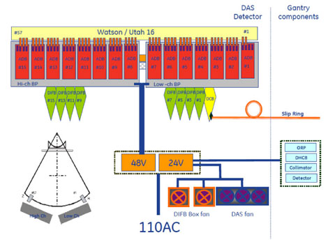
The backplanes for the Pancake DAS:
Convey the power to the X-Ray Detector, the DIFBs and the DCB.
Provide mechanical attachment and support for the DIFBs and DCB
Act as an interface between the ADB boards and the DIFBs to transfer the Digital data and control signals.
Provide for data and control transfer between the DCB and the DIFB cards.
Provide connectors for interfacing the DCB CAN bus communications to/from the Rotating Controller Interface Bus (CT-RCIB) and interfacing the DCB with the Detector Heater Control Board, and the generator kV and mA signals.
Provide diagnostic Error LED for displaying the state of the detector FET control.
Provide FET Command and bias lines. These are pass through signals from the DCB to the Detector module flex connections.
The DCB clock and trigger signals as well as the 48V power is routed on the backplane to groups of DIFB's.
There are 7 LEDs on Low channel backplane. These LEDs are from DCB board and show the status of DCB board. This make it possible to observe the DCB status without cover removal.
Below table shows the LED definitions:
Table 9: BP LED Definitions
| LED NAME | FUNCTION | |
| REF DESIGNATOR | ||
| FET_ERR | DS3 | Blink in case FET error happens |
| DCB_ERR | DS2 | DCB error code indicator |
| DCB_HEART | DS1 | Processor running indicator (On/Off sequence shows processor is running). |
| TRIG_SEEN | DS4 | Application code controlled: TRIG_SEEN |
| OFFSET | DS5 | Application code controlled: OFFSET |
| VIEWS | DS6 | Application code controlled: VIEWS |
| SHUTDOWN | DS7 | Application code controlled: SHUTDOWN |
Illustration 10: PDAS BP LED's
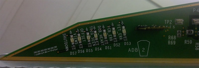
The DAS air plenum is comprised of the plenum housing, filter assembly and 3 fans.
There are 3 fans mounted to a fan plate on the front of the Air plenum.
There is a single filter with honeycomb EMC shield integrated onto the back side of the filter. With the fan plate off the front of the air plenum, the filter side can be seen. The EMC shield is susceptible to damage so care must be taken when handling the filter assembly.
The 48V power supply is a single power supply on the rotating assembly that powers the DAS, Detector subsystem, Collimator, ORP, Detector heater control board and Slip ring Transmitter. All voltages used by the DAS and Detector are generated via on board regulators on the DCB and DIFB's. The ADB board power is supplied by regulators on the DIFB's. There are no voltage adjustments for the DAS components. The Power supply has an internal fan for cooling.
The architecture of Power supply is as below:
Illustration 11: PDAS_Power_supply_architecture
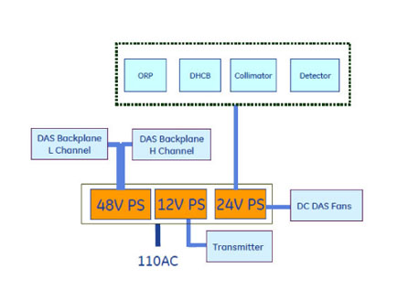
The Fuse Board provides a central point for fuse protection and distribution of 48Vdc power to the rotating harnesses and loads on the gantry. The board is powered by the main rotating 48Vdc power supply. The loads served by this board are: DAS, Collimator, DHCB, ORP & Slip-Ring Transmitter.
Illustration 12: PDAS Power Supply Fuse Board LED's and Test Points
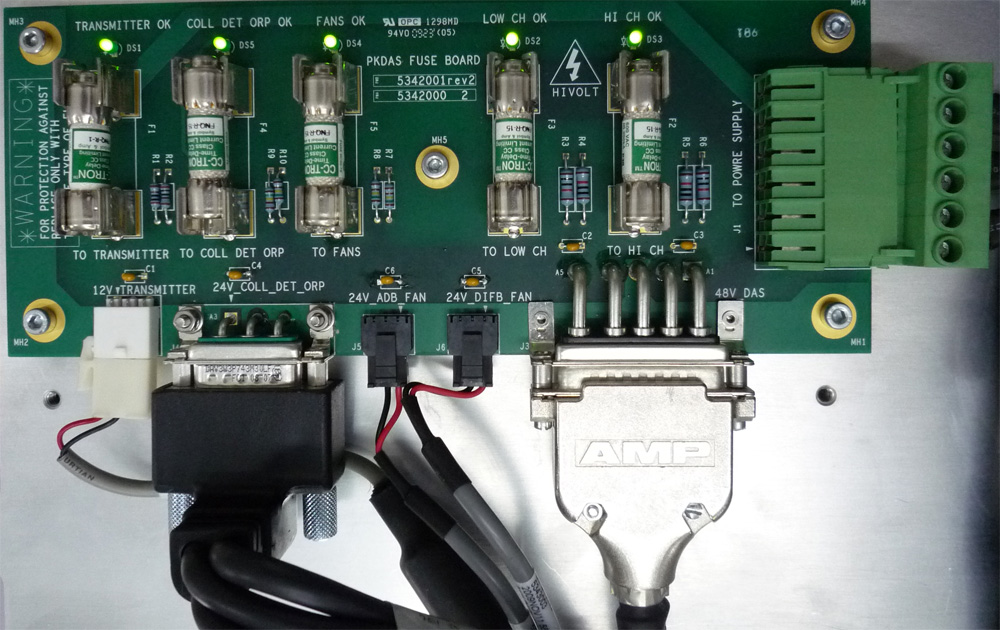
Table 10: LEDs and Test Points
| Label | Name | Description |
| DS 1 | +12Vdc | Green LED to indicate power to transmitter is ok |
| DS 2 | +48Vdc | Power to Low channel backplane DIFBs 1,3,5,7 and DCB |
| DS 3 | +48Vdc | Power to High channel backplane DIFBs 9,11,13,15 |
| DS 4 | +24Vdc | Power to ADB and DIFB fans |
| DS 5 | +24Vdc | Power to Collimator, DHCB and ORP |
| J 1 | +48Vdc | From power supply |
| J 2 | +12Vdc | Power to transmitter |
| J 3 | +48Vdc | Power to High/Low channel backplane |
| J 4 | +24Vdc | Power to Collimator, DHCB and ORP |
| J 5 | +24Vdc | Power to ADB fans |
| J 6 | +24Vdc | Power to DIFB fans |